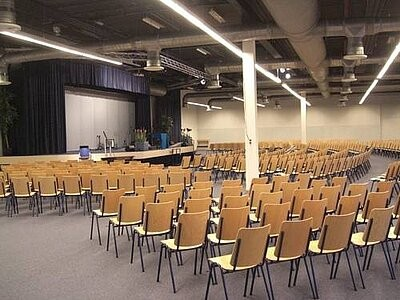
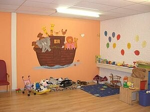

Kom ook eens langs
Iedere zondagmorgen om 10:00 uur komen we samen in ons gebouw De Uitkijk. Je hoeft niets te weten of mee te nemen.
Samenkomst

Zo ziet een zondag eruit
- 10:00 Samenzang We beginnen met zingen, begeleid door gitaar, bas, drums en zangers.
- Dan Gebed en aanbidding Een oudste opent met gebed, daarna aanbidden en prijzen we God samen.
- 10:30 Overdenking Een preek van ongeveer een half uur, uit de Bijbel en voor het leven van nu.
- Daarna Koffie en thee We sluiten af met gebed en zegen. Blijf gerust hangen om kennis te maken.
Neem je kinderen gerust mee
Voor de allerkleinsten is er Kids Club Junior. Kinderen van 4 tot 12 jaar beginnen in de dienst en gaan na de inleiding naar hun eigen bijeenkomst: de Kids Club.
Voor tieners is er eens per maand een tienerdienst, tegelijk met de gewone dienst, in de soos (bij binnenkomst links, aan het einde van de gang).

Goed om te weten
Parkeren
In de directe omgeving is voldoende parkeerruimte. Het terrein voor de ingang is op zondag voor ouderen en mensen die slecht ter been zijn. Niet parkeren bij de wasstraat links van het gebouw.
Met het openbaar vervoer
RandstadRail lijn 3 of 4 tot halte Seghwaert. Vandaar is het ongeveer 14 minuten lopen.
LooprouteToegankelijk
De grote zaal heeft een ringleiding voor slechthorenden. Bij de ingang is parkeerruimte voor wie slecht ter been is.
Niet in de gelegenheid?
Kijk thuis mee via YouTube: de livestream start elke zondag om 09:55 uur. Ook op je smart-tv via de YouTube-app, en eerdere diensten kun je terugkijken.
Naar de livestream